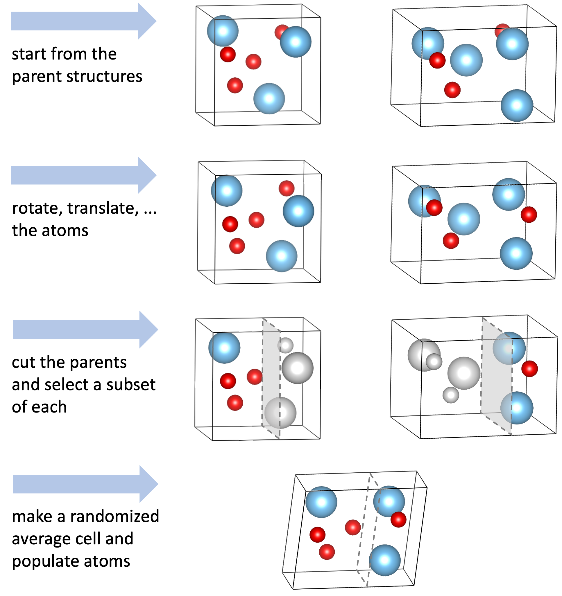

XtalOpt is a free and truly open source evolutionary algorithm designed to predict crystal structures.
Download todayLearn more
XtalOpt Version r9.0 Released!
- Added support for the MOPAC semi-empirical quantum mechanics code.
- Customizable polling interval for updating remote queue information.
- Automatic removal of remote working files optional.
- Optional removal of unnecessary files for VASP caluclations.
- Added a new "mitosis" function used to generate higher local order for initial structures.

Options for the "mitosis" function found in the "Structure Limits" tab.
- Option to rank all current structures and export structures to a new subdirectory as .cml, CONTCAR, or .got.

- Limit the total number of structures created during a run.
- New option to replace a failing structure with a new offspring.
- Ability to “inject” (seed) a structure mid-run
- Minimum atomic separation now specified as a fraction of the sum of atomic radii, with a hard minimum.
- Submission of remote calculations is throttled to ease DRMS load.
- More server-friendly method of fetching queue data.
- Support for GULP shell/core calculations added.
- Incorporated the XtalComp library for duplicate structure removal (niching).
- Fix compilation against Qt 4.6.3 and 4.8.0.
- Updated space-group detection library to spglib 1.0.8.
- Bundled libssh library removed, now an optional dependency.
- Added option to use command-line ssh/scp interfaces when libssh is unavailable or Kerberos authentication is needed.
- Numerous misc bugfixes.

XtalOpt
XtalOpt is implemented as an extension to the Avogadro molecular editor.
 +
+

Check out a few of the features:
User Interface Mutation Operators
Screenshot of Avogadro visualizing a 16 x TiO2 cell.
User Interface
Structure Limits

The "Structure Limits" tab
This tab is where the user defines the parameters of the each cell generated during the search. The user can specify the stoichiometry for each cell (e.g., 16 x Ti and 32 x O).
A range can be set for the length of each cell vector (a, b, and c) and the corresponding angles (α, β, and γ). The combination of the cell vector lengths determines the cell volume, but the user can set a limited range for the volume, or even a fixed volume.
Limiting the interatomic distances ensures the program is not generating nonsensical structures.
Optimization Settings
- Choose from several queueing systems and optimizer combinations.
- Queue systems supported include: SLURM, PBS, LSF, etc.
- Optimizers include: VASP, GULP, CASTEP, etc.

The "Optimization Settings" tab
Search Settings

The "Search Settings" tab
"Search Settings" is where the user can alter how the search will procede. The number of randomly generated initial structures and number of concurrently running structures and controlled in this tab. The termination criteria of final number of structures can be set here, as well. Users can adjust the percentage of occurence of each operator type. Furthermore, the individual paramters of each opertaor can be fine tuned (number of exchanges in a "permustrain" or minimum contribution from a parent during a "crossover"). Duplicate matching parameters are also found here.
Progress
As XtalOpt performs the search, the progress table continuously updates, providing information about each structure. In the figure we see individuals in various stages of completion: One structure XtalOpt displays is optimized (in blue), another structure has been automatically marked as a duplicate (dark green) and removed from the breeding pool, yet another structure is currently undergoing a local optimization (light green), while is waiting to be optimized (light blue).
Other useful information is displayed about each structure, such as the time spent in optimization, the optimized enthalpy, the cell volume, spacegroup, and each structure’s ancestory (i.e. parent(s) and parameters for the evolutionary operator that generated it). A status bar on the bottom of the window shows the number of structures that are optimized, running, and failing at any given time. This information is visible regardless of which tab is currently being viewed.
An additional feature of the progress table is the ability to immediately visualize any of the individuals in the Avogadro main window – simply clicking on a row in this table will display the three-dimensional structure in Avogadro, where it can be visualized, modified, or exported. If the user would like to add a bit of “intelligent design” to the evolutionary process, a structure can be modified and then resubmitted using a context (right-click) menu from the progress table. The context menu provides tools to (un)kill a structure, resubmit for local optimization at an arbitrary optimization step, or replace a problematic structure with a new, random individual.

The "Progress" tab
Plot
- Another visualization and analysis tool available during the search is the interactive plot.
- Allows investigation of various trends in the search by plotting a point for each individual.
- Each point can be plotted based upon structure number, generation number, enthalpy, energy, PV enthalpy term, lattice parameters, or cell volume on either axis.
- Further information is available by labeling the points with the individual’s spacegroup number, Hermann-Mauguin spacegroup symbol, enthalpy, energy, PV term, volume, generation, or index number.
- The plot is also interactive; zooming and panning are possible using simple mouse controls.
- Clicking on a structure’s point in the plot will load it in the main Avogadro window, allowing all the same functionality as described above in the progress table section.

The "Plot" tab showing optimized (blue) structures

The "Plot" tab showing optimized (blue) and duplicate (green) structures
Mutation Operators
Strain
The strain operator allows XtalOpt to mutate the unit cell paramters, but not the fractional positions of the atoms. One can multiply the cell row vectors by the symmetric voight matrix, as shown below,
\centering \vec{\textrm{v}}_{\textrm{new}} = \vec{\textrm{v}} \begin{bmatrix} 1+\varepsilon_{11} & \frac{\varepsilon_{12}}{2} & \frac{\varepsilon_{13}}{2} \\ \frac{\varepsilon_{12}}{2} & 1+\varepsilon_{22} & \frac{\varepsilon_{32}}{2} \\ \frac{\varepsilon_{13}}{2} & \frac{\varepsilon_{23}}{2} & 1+\varepsilon_{33} \end{bmatrix}
where εi,j is a random selected value, taken from a zero-centered normal distribution. This mutliplication acts as a mutation, which generates a new cell geometry. A depiction of this process can be found below.

Exchange
Exchange is, as the name suggests, the simpliest operator that exchanges two atoms of different types in a cell.

Ripple
The ripple operator acts as a periodic displacement of the atomic coordinates in a cell. A random axis is chosen (for this example the z axis will be chosen) and the atoms along this axis are shifted by an amount, \Delta z, where the new coordinate along that axis will be z_{new} = z + \Delta z. The displacement along the axis chosen is dependent on atomic placement in the orthogonal plane (x and y axes for this example) following the formula:
\Delta z = \rho\cos(2\pi\mu x+\theta_{x})\cos(2\pi\eta y+\theta_{y})~~~~~\mu\in\mathbb{Z},~\eta\in\mathbb{Z}
In this equation, \rho is the maximum displacement of an atom along the axis, \mu and \eta determines the number of cosine waves in the orthogonal directions, \theta_{x} and \theta_{y} are randomly chosen values between 0 and 2\pi that specify the strength of the ripple in various areas of the cell. An illustration of this operator can be found below.

Crossover
The crossover, or "cut and splice", operator is the biological equivalent of breeding in which two parents are combined to form an offspring. This is the only operator in XtalOpt that requires two parents to generate an offspring.
As previously stated, crossover is analogous to breeding for a biological entity. For XtalOpt's implentation, two parents are selected from the breeding pool. Both parent structures are operated on by a randomly selected reflection and rotation to avoid biasing one given orientation. Each newly mutated parent is then "cut" to form the two halves of what will be the offspring structure. Finally, the two halves are ``spliced" together. This occurs through first joining the atomic positions in fractional coordinates. The cell dimensions are defined through random weighting of each of the parents' cell vectors.

Supporters